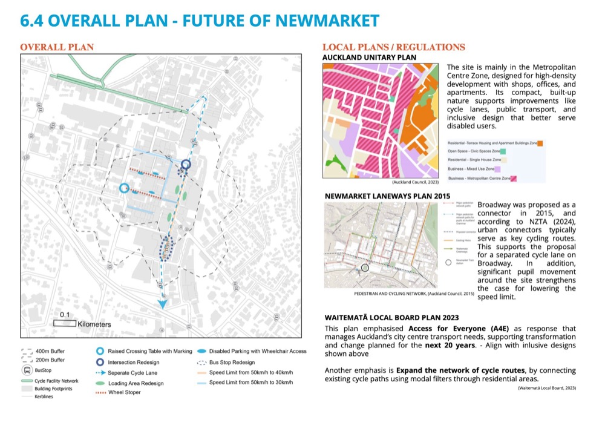
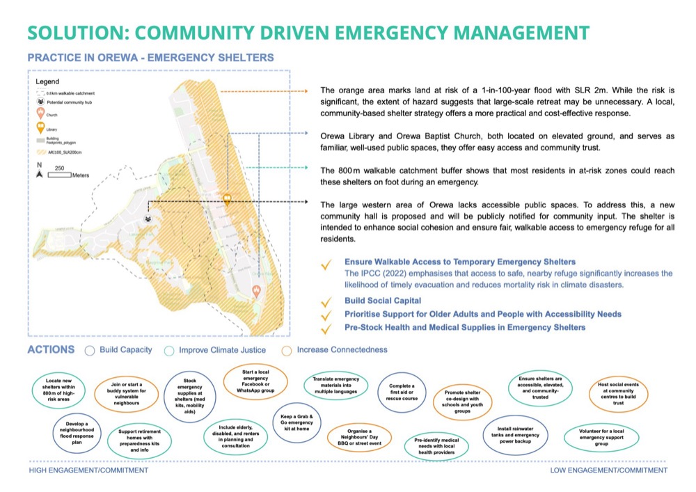
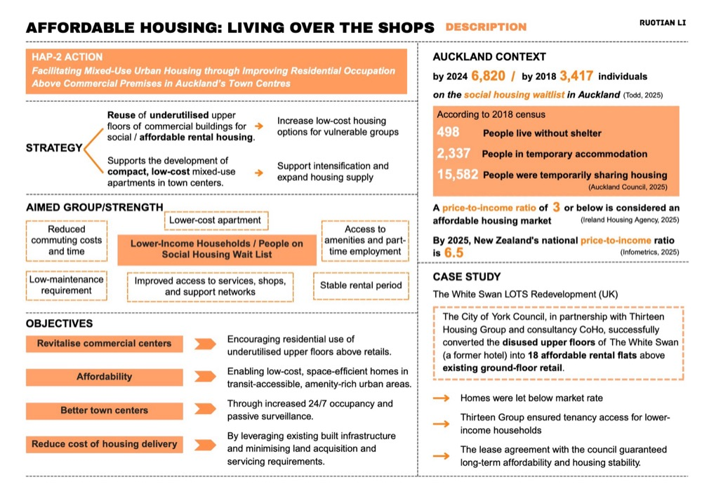
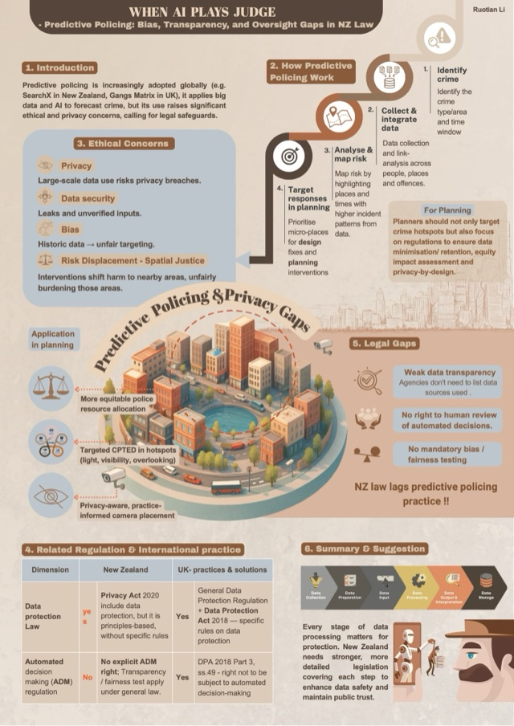

Urban planner · London
Kelly Li
I’m an urban planner studying for an MPlan in City Planning at UCL. My work spans research, design and policy — from housing resilience around Auckland’s railway stations and safer streets in Newmarket to climate adaptation on the Ōrewa coast.
Selected work
07 sheets

Safer streets for Newmarket
Crash mapping, CPTED and accessibility audits, and a ten-year plan to turn a car-dominated centre into streets for everyone.

Housing resilience and transit-oriented development
A summer research scholarship testing whether homes near Auckland’s railway stations hold their value through a downturn.

Climate justice on the Ōrewa coast
GIS mapping of flood risk and vulnerability, and a walkable, community-run network of emergency shelters.
Honours dissertation
From Wheels to Will
Experience →Reinforcement →Attitude →Habit
From Wheels to Will
Why new infrastructure alone hasn’t moved Aucklanders out of their cars — and how psychology could be built into transport policy.

Living over the shops
Turning empty upper floors in Auckland’s town centres into affordable rental homes, drawing on a scheme in York.
Development feasibility
31 Anzac Avenue, Auckland
6 storeys2,232 m² GFAIRR ≈ 13%
A mixed-use scheme at 31 Anzac Avenue
Planning controls, market evidence, a concept scheme, cost plan and discounted cash flow for a city-centre site.

Two research posters
Predictive policing and privacy law in New Zealand and the UK, and the theory of insurgent planning.
Also
MorphoHazards — a concept for a disaster-risk platform combining GIS, urban morphology and deprivation data, aimed at rural revitalisation in China. Developed with Yanchen Delphine Wu for an innovation competition at the University of Auckland, 2025.
About

Before moving to London, I completed a Bachelor of Urban Planning (Honours) at the University of Auckland, graduating with Upper Second-Class Honours. Alongside my studies, I worked as a researcher and as an intern in practice.
Education, experience and skills →